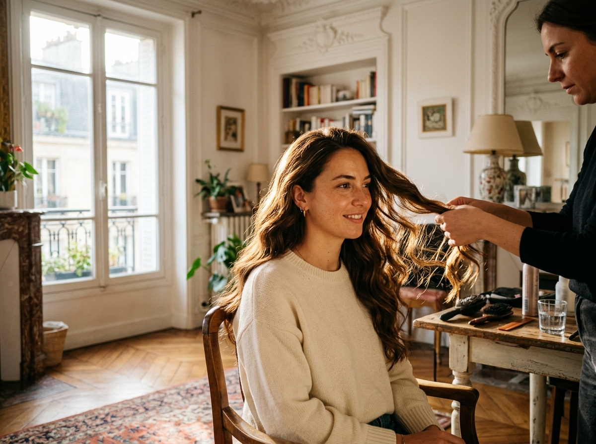
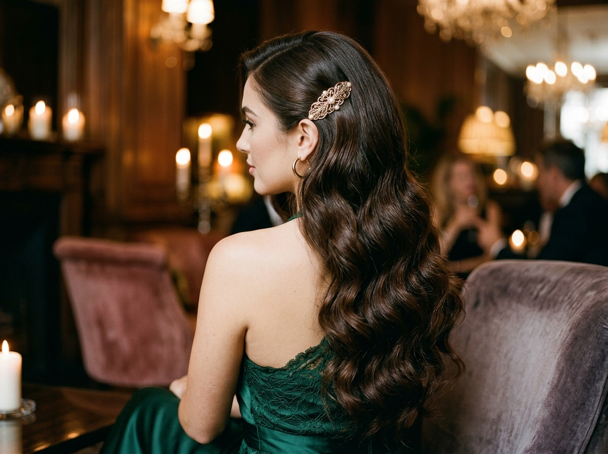

À propos
Hadjira, main de pro,
au service de votre beauté
Coiffeuse professionnelle à Oran, Hadjira exerce au sein de l'Institut de Beauté Ali — l'une des adresses les plus en vue d'Oran sur Instagram et TikTok.

Formée au rythme exigeant des grands instituts oranais, Hadjira a fait ses armes au sein de l'Institut de Beauté Ali — cette adresse que tout Oran connaît sur les réseaux, où l'on vient de partout pour la coiffure, la beauté et le geste sûr.
C'est cette même exigence qu'elle apporte chez vous : matériel professionnel, produits de marque, finitions impeccables — et ce sens du détail qui fait qu'une coiffure tient du matin au soir.
Coiffure, onglerie, maquillage, extensions : une seule intervenante, une beauté pensée comme un tout, dans le confort de votre maison.
L'école du geste
Formée à l'Institut de Beauté Ali
L'Institut de Beauté Ali est une référence à Oran : des milliers d'abonnées sur les réseaux, un flux de clientes qui ne dément pas, des standards élevés sur chaque prestation. C'est dans cette école du quotidien que Hadjira a aiguisé son geste — vitesse, précision, écoute.
Voir ses réalisations
L'atelier complet
Coiffure, onglerie, maquillage et extensions : tout le nécessaire professionnel vient avec elle.
Tout Oran
Centre-ville, Bir El Djir, Es Sénia, Canastel et alentours — déplacement inclus.
Réponse directe
C'est Hadjira qui répond sur WhatsApp, du samedi au jeudi. Pas d'intermédiaire.
Bookez Hadjira
chez vous
Écrire sur WhatsApp ↗
Oran centre · Bir El Djir · Es Sénia · Canastel · et alentours